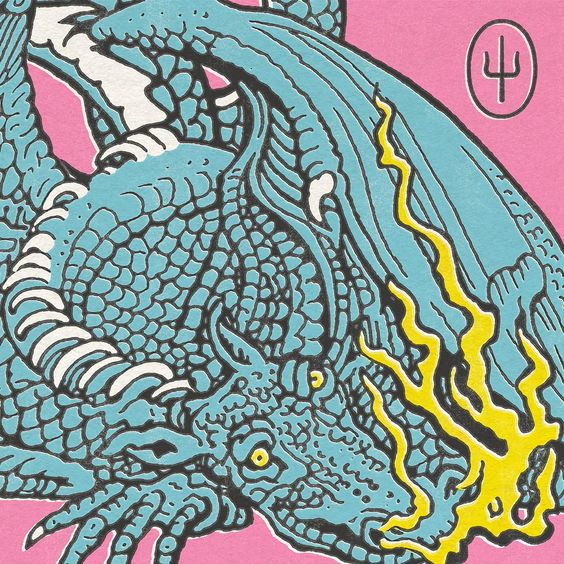
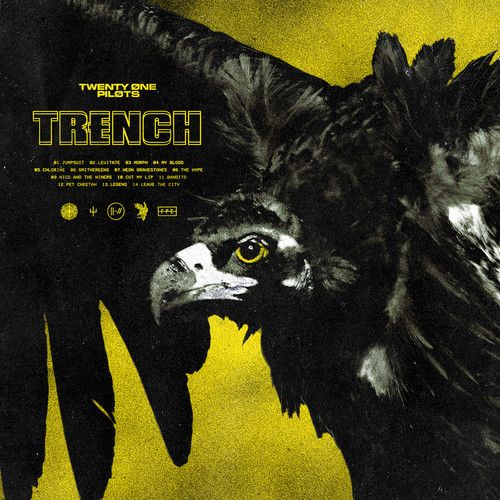
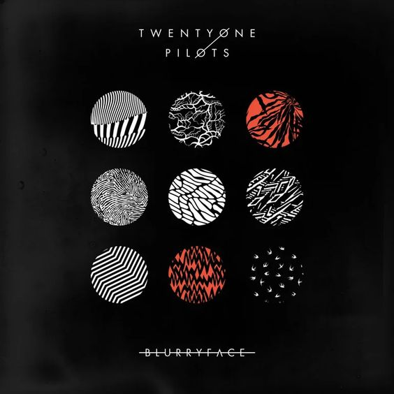
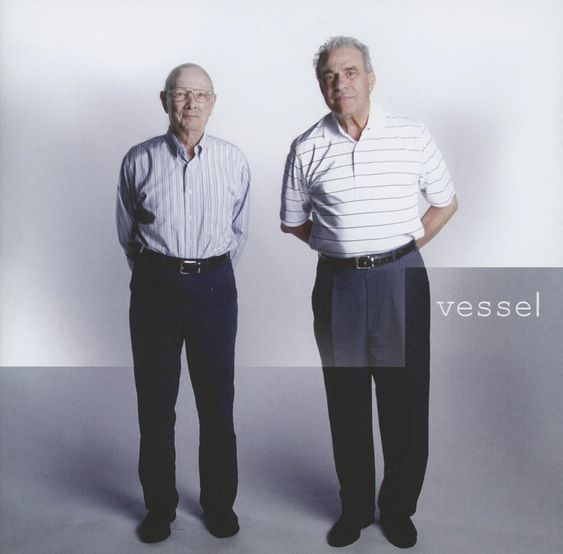

Home
Album
Videos
Subscribe
Twenty One Pilots
The Duo Musician From Colombus Ohio
Josh Dun (Drummer) | Tyler Joseph (Singer,Bassist,Pianist)
Album

2021-05-21
Scaled And Icy

2018-10-05
Trench

2015-05-17
Blurryface

2013-01-08
Vessel
Awards
2015
- Artist of the Year (Alternative Press Music Awards)
2016
- Album of the Year "Blurryface" (Alternative Press Music Awards)
2016
- Best Foreign New Act (GAFFA Awards)
2016
- Alternative Rock Song of the Year "Stressed Out" (iHeartRadio Music Awards)
2016
- Alternative Rock Artist of the Year (iHeartRadio Music Awards)
2016
- International Revelation of the Year (NRJ Music Awards)
2016
- Best Rock Video "Heathens" (MTV Video Music Awards)
2016
- Best Alternative (MTV Europe Music Awards)
2016
- Best Live Act (MTV Europe Music Awards)
2016
- Best Fanbase (Kerrang! Awards)
2016
- Top Rock Album "Blurryface" (Billboard Music Awards)
2016
- Top Rock Artist (Billboard Music Awards)
2016
- Favorite Duo or Group "Pop/Rock" (American Music Awards)
2017
- Most Dedicated Fans (Alternative Press Music Awards)
2017
- Favortie Artist "Alternative Rock" (American Music Awards)
2017
- Top Rock Artist (Billboard Music Awards)
2017
- Alternative Rock Song of the Year "Ride" (iHeartRadio Music Awards)
2017
- Favorite New Artist (MTV Video Music Awards)
2017
- Best Rock Video "Heavydirtysoul" (Nickelodeon Kids' Choice Awards)
2017
- Best Rock Band (Telehit Awards)
2018
- Hottest Record of the Year "Jumpsuit" (BBC Radio 1)
2018
- Album of the Year "TRENCH" (Rock Sound Awards)
2019
- Best Rock Album of the Year "TRENCH" (iHeartRadio Music Awards)
2020
- Favorite Artist "Alternative Rock" (American Music Awards)
2021
- Alternative Rock Artist of the Year (iHeartRadio Music Awards)
2021
- Alternative Rock Song of the Year "Level Of Concern" (iHeartRadio Music Awards)
2021
-Songwriters & Publishers of the Most-Performed Songs of the Year "Level Of Concern" (BMI Awards)
Videos
Subscribe Twenty One Pilots